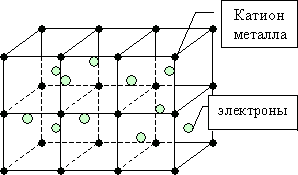
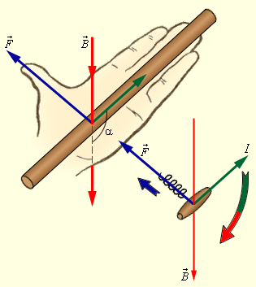
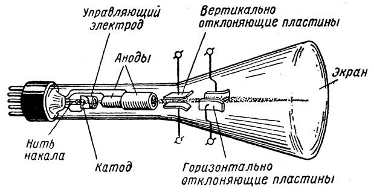
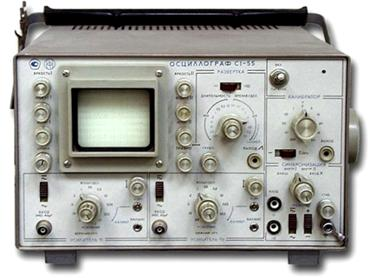

После рассмотрения действия силы Ампера, которая подчиняется правилу левой руки, мы познакомимся с действием магнитного поля на движущийся в нём заряд. Рассмотрим «электронную модель», предложенную в конце XIX века учёным того времени Хендриком Лоренцом.
Если бы Андре Мари Ампер знал о действии электрического тока, то продвинулся гораздо дальше в своих открытиях.
Как и многие учёные того периода Ампер придерживался «модели эфира»: электрический ток – эфир, некая жидкость, которая протекает по проводникам. Именно отсюда и сам термин «электрический ток» - то, что течёт. Только в самом конце XIX века – вначале ХХ модели эфиров стали отходить, а на смену им стали появляться новые модели адекватнее отражающие наблюдаемые явления. В частности были открыты катодные лучи, была выявлена радиоактивность, проведены исследования Фарадея по электролизу – всё это наводило на мысль о существовании заряжённых частиц, которые как-то движутся.
Серьёзную модель предложил учёный Хендрик Лоренц так называемую «электронную модель». При образовании кристаллической решётки металлов, от каждого атома металла отрывается по одному внешнему электрону, таким образом, в узлах кристаллической решётки находятся положительные ионы, а в объёме этой решётки почти свободно могут двигаться электроны (рис. 1).

Рис. 1. Кристаллическая решетка
Модель, предложенная Лоренцом, хороша хотя бы тем, что достаточно легко объясняла возникновение электрического тока в металлах. При обычных условиях эти электроны находятся в беспорядочном движении вокруг кристаллической решётки. И только при подаче разности потенциалов на конце проводника, когда внутри проводника появляется электрическое поле, кроме этой хаотической составляющей появляется другая – упорядоченная составляющая или направленное движение. Именно это движение, согласно модели Лоренца, представляет собой электрический ток.
Так, со стороны магнитного поля (\( \vec{B} \)) на проводник с током (I), действует сила Ампера (\( \vec{F} \)) перпендикулярная направлению тока и направлению линии магнитного поля. (Рис. 2)

Рис. 2. Направленное движение
«Если электрический ток представляет собой направленное движение зарядов, то не будет ли со стороны магнитного поля действовать такая же сила» - примерно, так рассуждал Лоренц. В выражение для силы Ампера (1.1.) вместо силы тока подставим определение силы тока – отношение перенесенного заряда в проводнике ко времени, за которое было осуществлено данное перенесение.
\( F=B \cdot I \cdot l \cdot sin \alpha \) (1.1)
\( I = \left| \frac{\Delta q}{\Delta t} \right| \) (1.2)
Также заметим, что отношение элемента длины проводника к интервалу времени – скорость движения заряда.
\( \left| \frac{l}{\Delta t} \right| = v \) (1.3)
Тогда выражение принимает вид (1.4.). Модуль силы равен произведению величины магнитной индукции поля на количество переносимого через проводник заряда на скорость частиц, которые переносят заряд и на синус угла между направлением движения заряда и направлением вектора магнитной индукции.
\( F = B \cdot |\Delta q| \cdot v \cdot sin \alpha \) (1.4)
Учтём, что носителями электрического тока в проводнике являются электроны, величина зарядов которых одинакова. Поэтому можно записать, что совокупный заряд, переносимый через поперечное сечение проводника – произведение элементарного заряда на количество электронов переносимых через поперечное сечение проводника.
\( \Delta q = q \cdot N \) (1.5)
\( F = B \cdot q \cdot N \cdot v \cdot sin \alpha \) (1.6)
Вывод приведенной формулы был сугубо формальным, однако, даже такой вывод позволял предположить, что не только на проводник с током, но и на отдельный заряд в магнитном поле будет действовать сила со стороны этого поля. Предположим, что число зарядов равно единице и этот заряд движется не внутри кристаллической решётки, а в свободном пространстве. Возникает вопрос: что произойдёт с этим зарядом, если он войдёт в область, где существует однородное магнитное поле? Согласно нашей гипотезе, на частицу, движущуюся в однородном магнитном поле, должна действовать сила, которая перпендикулярна скорости этой частицы (поскольку именно так будет направлен электрический ток, связанный с движением этих частиц) и перпендикулярна линиям магнитного поля. Величина этой силы будет определяться так:
\( F = B \cdot q \cdot v \cdot sin \alpha \)
Открытие катодных лучей, а также радиоактивности позволили проверить экспериментально гипотезу Лоренца. Воспользуемся электронно-лучевой трубкой (рис. 3)

Рис. 3. Электронно-лучевая трубкой
В вакуумной трубке размещены две пластины: анод и катод. На катод подаётся отрицательный потенциал, на анод – положительный. Для того чтобы в трубке возникли свободные электроны, катод нагревается нитью накала. Свободные электроны металлического катода вблизи его поверхности могут покидать эту поверхность, обладая высокой кинетической энергией за счёт нагревания – явление термоэлектронной эмиссии. Свободные электроны, покинувшие поверхность катода, попадают в зону действия электрического поля между анодом и катодом. Линии напряжённости этого поля направлены от анода к катоду. Электроны, будучи отрицательно заряженными частицами, движутся от катода к аноду – против линии напряжённости поля. Так в трубке возникает электрический ток, направленный от анода к катоду. Если использовать анод, покрытый специальным материалом, который светится при попадании на него заряжённых частиц, можно пронаблюдать место попадания электронов по световому пятну. Именно так и работает электронно-лучевая трубка. При подаче напряжения на анод и катод мы видим небольшое зелёное пятно на аноде – это место бомбардировки экрана электронами.
Если воспользоваться осциллографом (рис.6), то будет показано не световое пятно, а светящаяся линия. Когда одним из полюсов подводят к горизонтальной линии, находящейся на осциллографе – она отклоняется от своего первоначального значения в направлении перпендикулярном направлению скорости и направлению линий магнитного поля, поскольку магнитное поле направлено от северного полюса к южному. Это на качественном уровне подтверждает гипотезу.
Попытаемся получить не только качественные, но и количественные результаты. Для этого будем проверять зависимость силы действующей со стороны магнитного поля от различных факторов. В частности от скорости движения электронов. Каким образом можно поменять скорость движения электронов в осциллографе? При помощи регулировки яркости линии на осциллографе можно изменить скорость движения электронов в осциллографе. Чем ярче линия – тем быстрее движется электроны внутри трубки. Если поднести магнит к осциллографу северным полюсом и менять скорость движения электронов – то по мере уменьшения яркости – искажение лини также будет уменьшаться. Это означает, что сила, действующая со стороны магнитного поля на электроны, при уменьшении скорости электронов тоже уменьшается. Более точные измерения дадут нам прямую пропорциональность между силой, действующей со стороны магнитного поля на движущиеся заряды и скоростью этих зарядов. Сила, действующая на заряды со стороны магнитного поля, пропорциональна индукции – если поднести несколько магнитов к осциллографу, то искажение будет гораздо сильнее. Величина силы действующей со стороны магнитного поля на движущийся заряд зависит от взаимного направления вектора магнитной индукции и вектора скорости движения частиц – при поднесении магнитов к осциллографу южным полюсом – линия будет искажаться в противоположном направлении.

Рис. 4. Осциллограф
Обобщим выводы из проделанных экспериментов. На движущийся в магнитном поле заряд (q) со стороны магнитного поля действует сила (F), направление которой зависит от взаимного направления вектора скорости движения () заряда и вектора магнитной индукции поля (В). Величина силы пропорциональна скорости движения заряда и модулю магнитной индукции. Направление силы определяется по правилу «Левой руки» (рис. 2).
\( F = B \cdot q \cdot v \cdot sin \alpha \) (1.7)
Таким образом, полученное ранее выражение для силы, описывает взаимодействие магнитного поля с движущимся в этом поле электрическим зарядом. Открытие силы действия магнитного поля на движущийся в нём заряд стало возможным только благодаря улучшению представлений о строении вещества, электрическом токе в металлах, движении заряженных частиц. И огромную роль во всех этих задачах сыграл Лоренц, поэтому открытая сила и получила название – сила Лоренца.